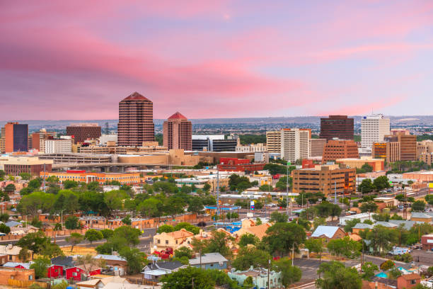
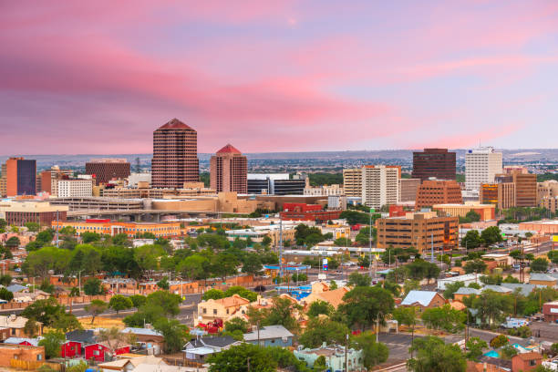
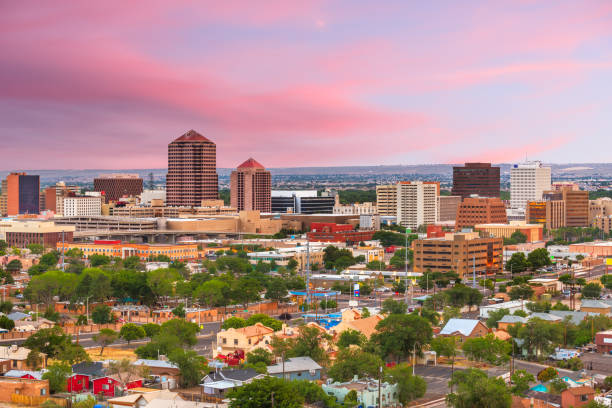

Comment est ce que la série Breaking Bad à été réalisé ?
Le tournage s'est principalement fait sur pellicule 35 mm, avec des caméras numériques utilisées selon les besoins pour obtenir des angles supplémentaires, des prises de vue en perspective et des prises de vue accélérées . Breaking Bad a coûté 3 millions de dollars par épisode à produire, soit plus que le coût moyen d'un programme câblé de base. La série a été en grande partie tournée dans et autour de la ville d'Albuquerque au Nouveau-Mexique. Un choix qui n'est pas anodin, quand on sait que cette ville est toujours considérée comme l'une des plus dangereuses aux États-Unis, juste derrière Memphis.
Le créateur de la série est Vince Gilligan : est née le 10 février 1967 à Richmond. Après s'être fait connaître pour son travail de scénariste sur la série télévisée X-Files, il est devenu le créateur et le showrunner de la série Breaking Bad, ainsi que de sa série dérivée, Better Call Saul.